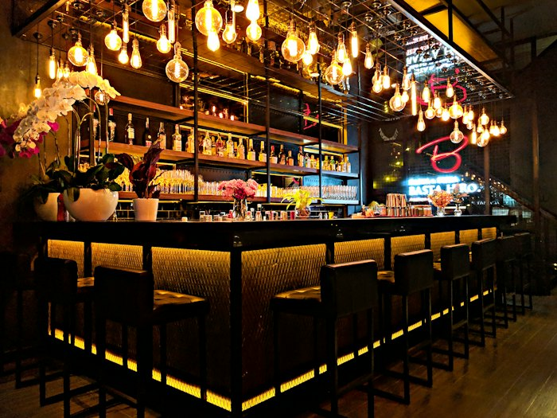

Sample restaurant, Troy, NY (fictional)
Hudson & Main Kitchen
Hand-cut pasta, wood-fired chicken and fresh bread from a neighborhood kitchen. Dinner Tuesday to Sunday, late on Friday and Saturday.

From the kitchen
What guests say (sample reviews, made up)
The pappardelle is the reason we keep coming back.
Warm room, quick service, and the bread basket disappeared in minutes.
Great spot for a birthday dinner with a big group.
Visit
100 Example Street, Troy, NY (fictional)
(518) 555-0123
hello@hudsonmainkitchen.example (fictional)
| Tue to Thu | 5pm to 9pm |
|---|---|
| Fri and Sat | 5pm to 11pm |
| Sunday | 4pm to 8pm |
| Monday | Closed |